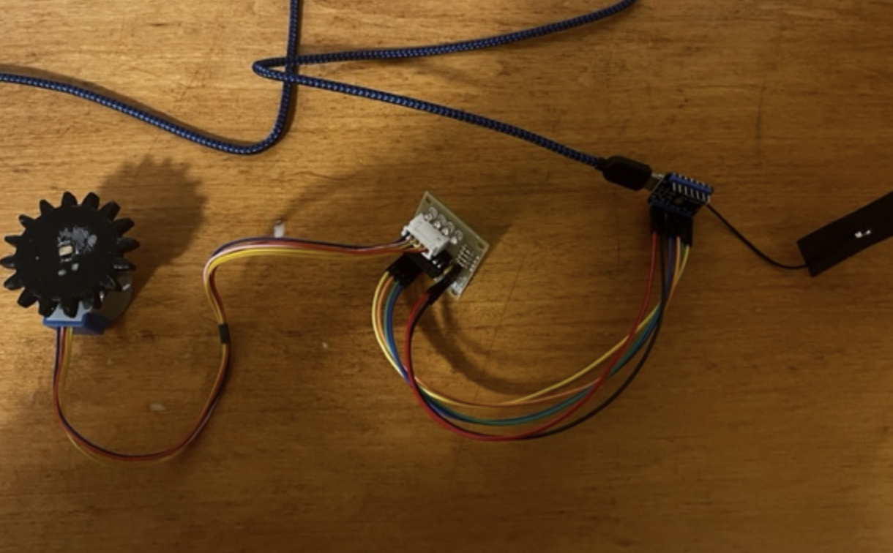

<br>
## 9: Radio, WiFi, Bluetooth
I worked with Andrea to make a stepper motor part for her final project. If you press one button it is supposed to push a syringe to pour 1 ml of liquid out. When you press another it draws back and takes in 10 ml of liquid.
<center></center>
<p>
This is the code we used <a href="9.html">LINK TO CODE</a> .
</p>
<p>
This is the link to the <a href="9.1.html">FIREBASE</a> .
</p>